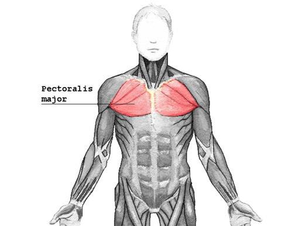
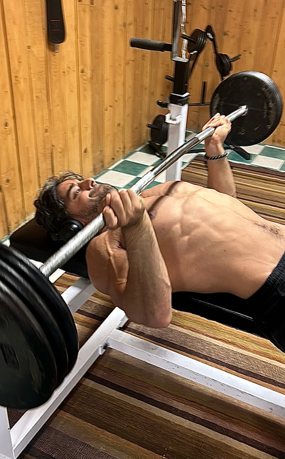
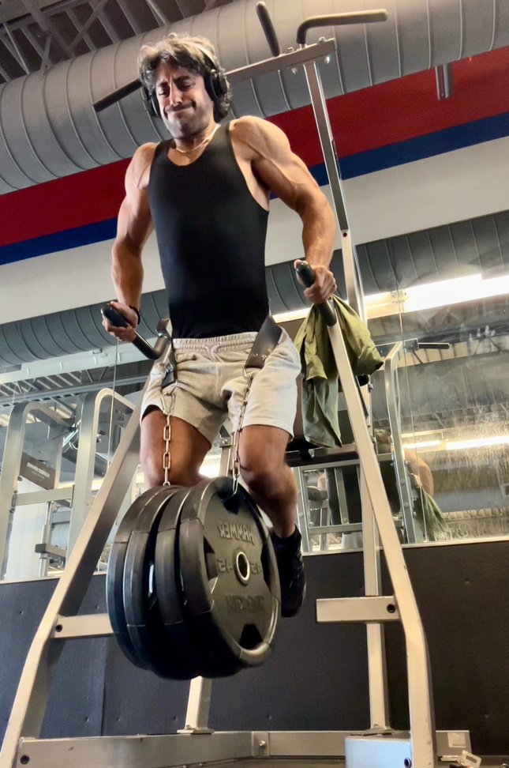
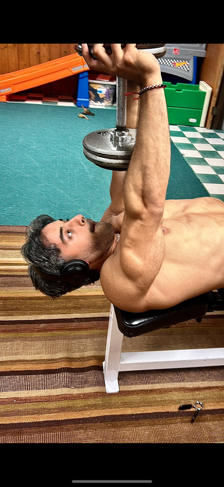

Now before we get into the ACTION PACKED INFORMATION You are probably here because you have a:
Small Chest 1.
Weak Chest 2.
Could suffer from one.. Could suffer from both…
Either way NO BUENO and we do not accept status-quo results.
Because in this guide…we will fix both regardless.
This is for you IF you CAN’T grow your chest despite:
Being able to bench high numbers Ridiculously high volume training Low volume and high intensity training Working out for years with little to no results to show for it Having “Bad” Chest Genetics
P L E A S U R E & O U R F I R S T L O V E . T H I S
I S T H E T W I S T I N
T H E P U N C H T O Y O U R P H Y S I Q U E
S T A N D O U T
Page 4
Dimensions: 595.5 × 842.2 pts
HAVE YOU EVER SEEN SOMEONE WHO HAS A SOLID OVERALL PHYSIQUE AND A SMALL MANS CHEST?
If you happen to fall into this category you will understand this deep to your core.
You feel lackluster, miserable, and underwhelmed.
Reduced to believing that it's “just not in the cards for you”.
That there is NOTHING you can do about it & it’s out of your control.
Especially if you have your shirt off… having the filled out chiseled chest gives your physique a leg up.
We can even take it back to the start of our lifting days…
The vision of having that DIESEL Bodybuilder Chest that rips out of shirts.
And the dudes born with great chest genetics do not understand the struggle for us.
Those of us cursed with a chest that no matter what our workout plan was or our diet…just simply would not respond.
Its infuriating and all we desire is the Chest that is STACKED & STRONG.
But what if we were doing it all wrong this whole time?
What if it was simple?
That's what I figured out.
And that is what I will share with you today.
Page 5
Dimensions: 595.5 × 842.2 pts
MINDSET
The WORST muscle group (genetically) on my body was my chest.
None - 516×661 (jpeg)
When I tell you my chest simply would not grow no matter what…
Understand it was YEARS of work for zero visible difference to show for it.
I could bench 275 lbs for reps and my chest still looked like a childs.
Had more people than I can count who COULD NOT bench 225 lbs & STILL mogged my chest.
None - 435×872 (png)
None - 516×636 (jpeg)
Needless to say it has been an incredibly frustrating process.
I had nothing to show for it despite all the effort and consistency I was giving to the gym.
And you know this pain deep to your core when you experience this first hand.
It was the FINAL and NECESSARY puzzle piece for me to become truly UNDENIABLE.
Have you seen somebody with a baby chest?
It almost feels like there is something missing.
Sure you will be looked at as jacked…but that piece of the puzzle makes EVERYTHING comes together.
I knew this deep down and I pulled out the “My chest genetics suck and there is nothing I can do about it”.
I played that card for most of my life.
Page 6
Dimensions: 595.5 × 842.2 pts
But as you know…complaining about something does not change our situation.
I didn’t realize prior to years of trial and error is that it requires a lot more knowledge of the details than I gave it credit for.
But it’s not necessarily in what you are doing…its in how you are PACKAGING up your chest days.
By simply learning to PRIORITIZE certain lifts in a SPECIFIC order.
You will have a chest that finally grows.
There was no one else on the internet that had the answer to this problem or were able to explain it to where it made sense.
THERE ARE FEW REASONS WHY PEOPLE WON’T EVER GET THE CHEST THEY DESIRE :
You do ENDLESS SETS OF FLAT BENCH 1.
You care too much about volume 2.
You think you need 3 chest days a week to grow 3.
Don’t know what exercises will actually hit the parts of your chest you are looking to grow 4.
You are scared of hurting your shoulders 5.
Not a clue which exercises will actually move the needle for you 6.
And if you do know what exercises are most effective, you aren’t executing your lifts properly 7.
And EVEN IF you know what exercises are most effective and you are executing your lifts properly, you probably aren’t placing them in the correct order to give you the most results for your time and effort inside the gym
8.
But when you figure this out (which I will CLEARLY layout in this guide) you will finally grow the chest you’ve been looking for all these years.
But that all stops TODAY.
Page 7
Dimensions: 595.5 × 842.2 pts
UNDERSTAND: Genetically I was never “meant” to look like this
This was during my “Working Out” Arc for 6+ YEARS with lackluster Results
None - 351×597 (jpeg)
None - 270×483 (png)
None - 351×458 (jpeg)
None - 369×800 (png)
And AFTER FINDING the Work that Works:
None - 468×649 (jpeg)
None - 585×608 (jpeg)
Page 8
Dimensions: 595.5 × 842.2 pts
None - 774×1362 (png)
All I found on the internet was USELESS & ELEMENTARY information.
“Calorie Surplus & Progressive Overload”.
And quickly realized if I wanted the answer I would have to go find them. See, finding the answers was not easy to say the least. However, one of my greatest strengths is finding creative solutions to a problem.
A different way to fix the problem that would give me results I CRAVED.
If I am going to sacrifice time (the one thing we can’t get back) then I better make damn sure it is being used effectively. And what I found is that I was a few minor adjustments away from the chest I wanted.
But quickly realized this problem stemmed from a lack of understanding of the fundamentals.
I decided I was going to learn the biomechanics within the body:
How muscles are meant to move The direction of our muscle fibers
Once I nailed this down to its core… it was free rein for me to come up with new effective exercises that you don’t see anywhere else.
Testing exercises that I thought would be supremely effective!
Now were they all hits?
Hell no… but in that process I have landed myself quite the library of chest exercises that actually give you the results for your hard work .
I am writing to document this for my old self.
Everything I wish I would have known when I got started.
Page 9
Dimensions: 595.5 × 842.2 pts
I AM GIVING YOU THE SHORTCUT…CUT THROUGH ALL THE BULLSHIT AND LAND ON THE REAL STUFF.
Is it easy? No.
Does it require actual work? Yes.
But this is going to accelerate your progress A TON!
IF YOU ARE HERE, YOU DON’T HAVE A WORK ETHIC PROBLEM… YOU HAVE A KNOWLEDGE PROBLEM.
You simply do not know what “the work that works” looks like.
That's what I will explain CLEARLY in the rest of this guide.
Because I want to get you right.
I am going to organize this guide into different sections so you can simply choose to read the sections that you struggling with most.
But I HIGHLY RECOMMEND you read through this entire guide.
Because it’ll only make this process that much easier for you.
You can click on ANY section below to jump straight to the content that speaks to you. No endless scrolling required.
SECTIONS OF THE GUIDE:
The Undeniable Standard: Becoming a Natural Crusader Anatomy Strength Muscle Growth Building Injury Resilience Mobility The SNIPER’S CHEST Day (The Chest Day Formula)
Page 10
Dimensions: 595.5 × 842.2 pts
THE UNDENIABLE STANDARD: BECOMING A NATURAL CRUSADER
What does it mean to be Undeniable?
To be undeniable is to be unshakable; unforgettable. The type of presence that doesn’t merely exist but demands attention, even when silent.
An undeniable man doesn’t chase validation.
He commands it, simply by being .
He isn’t swayed by fleeting trends or superficial praise or pursuits.
He is grounded, immovable, and magnetic.
Every man has to make this choice: to be undeniable or to be invisible.
This is the path of the Natural Crusader
This path isn’t for the faint of heart… it’s for the man who knows that true power comes from within, who’s ready to claim his place in the world.
As a Natural Crusader, you commit to living by an unbreakable code, a set of rules that turn effort into impact , muscle into presence , and discipline into absolute mastery.
These rules aren’t just words…they’re the steps to becoming the one who stands out, the one who leaves a mark so strong it’s unmistakable. These rules are the undeniable standard .
Page 11
Dimensions: 595.5 × 842.2 pts
RULES OF THE NATURAL CRUSADER:
RULES OF THE NATURAL CRUSADERS:
Lead with Heart, Die on Your Sword 1.
Empty the Energy Clip Every Day 2.
Never Go to Bed Hungry 3.
Make Every Decision from Strength 4.
Food is Fuel, Not Entertainment 5.
Burn the Past 6.
No Counting, Just Consuming 7.
Master Desire (Dangle the Donut) 8.
Walk Into the Storm 9.
Ignore Your Own Hype 10.
Live By Your Standard 11.
Reject All Shortcuts 12.
Wear Your Scars Proudly 13.
Face Fear as a Challenge 14.
If I had learned these 14 rules sooner, my life would be unrecognizable today. Click the video below to see each one explained and why they could be the turning point for you too.
In order for us to build the CHEST correctly…we must have an understanding of the anatomy.
“CMONNN UNC… I am not here for a lecture bro!”
Unlike your current or former professors, I am only going to give you information that helps better facilitate you LOOKING STACKED.
None - 600×800 (jpeg)
Once you understand the anatomy of the chest it's going to be 100x easier to deliver targeted stress to your pecs that will both sculpt & build your chest after all this time
I will make it clear how to be as effective as possible with your time.
ON THE OTHER SIDE OF THIS “BORING” INFORMATION IS EVERYTHING YOU’VE WANTED THE ANSWERS TO…
The Chest is made up of two parts:
Pectoralis Minor Pectoralis Major
“So what is the difference between the Pec Major & the Pec Minor Uncle Rommy?”
None - 551×359 (jpeg)
Page 13
Dimensions: 595.5 × 842.2 pts
Okay bro I am not your Uncle but before we get into the differences.
None - 505×480 (jpeg)
This concept below is something you MUST understand because it’ll allow EVERYTHING to be much easier for you: If we really want to hit your chest like a SNIPER, you've got to follow the fibers. It’s all about getting your body to move the way the muscle is built to work. When you follow the fibers, every rep becomes MULTIPLES Times more effective, locking into the contraction and maximizing the load on your chest. This is PRECISION training…no wasted effort, we don’t miss our target.
Let’s start with the:
PEC MINOR The image on the top right is showing you how the muscle fibers of the muscle run.
The pectoralis minor is a smaller, yet crucial muscle located underneath the pectoralis major.
It’s crucial because it SUPPORTS shoulder mobility & stability by drawing our shoulder blades down & forward.
However the Pec Minor does NOT contribute to much size or shape of your chest.
But this is the BIGGEST issue I see among gym participaters… the focus is all about the “Show Muscles”.
If your Pec Minor is lagging…you will hurt yourself.
It is a ticking time bomb.
If your pec minor is weak…your posture will likely be poor, shoulder pain will flare up, and your movement will be restricted with your bench.
Page 14
Dimensions: 595.5 × 842.2 pts
It is the supportive teammate working behind the scenes to INCREASE your lifting numbers without impeding on the proper function of the movement If your Pec Minor is STRONG…it’ll only help to keep your shoulder aligned and posture in check.
And when that happens… guess what?
Your chest looks broader & shoulders sit back and down.
And when it comes to building injury resilience…your risk of shoulder injury in pressing movements drops SIGNIFICANTLY.
The Pec Minor is the foundation of chest that allows us to get SUPERIOR results.
None - 375×543 (jpeg)
EXERCISE EXAMPLE FOR THE PECTORALIS MINOR: (CLICK EACH EXERCISE FOR A VIDEO TUTORIAL)
Dumbbell Pullovers
Now comes to the section of the Chest that takes Center Stage:
PECTORALIS MAJOR
“So the Pectoralis Major is where we get gusto…can you break that down for me in a clear and concise way?”

None - 516×387 (jpeg)
Yes when it comes to SUPERIOR Chest Growth… the pectoralis major takes center stage.
Absolutely, again here is another image with arrows showing how the actual muscle fibers run.
3. Abdominal Head (Lower Chest) The abdominal head portion of the chest is what people struggle with.
Where it looks blobby & flabby.
Because the abdominal head ALLOWS us to bring your arms down & inward…
This is how we can solve that problem.
By training the abdominal head you will have a COMPLETE look in your chest development.
“But Uncle Rommy will my chest sag?”
Not how that works…it will grow but you won’t have an overly saggy chest.
Matter of fact you’ll notice your lower chest tighten and have that cool scoop.
It’ll provide you the FULL, Squared chest aesthetic.
Furthermore as the cherry on top… the head plays a role in stabilizing your chest during heavy movements.
None - 626×472 (jpeg)
Page 18
Dimensions: 595.5 × 842.2 pts
EXERCISE EXAMPLE FOR THE ABDOMINAL PART: (CLICK EACH EXERCISE FOR A VIDEO TUTORIAL)
Chest Dips
By targeting EACH HEAD & training like a sniper…you leave no choice for your chest but to grow and get stronger.
Complete, symmetrical chest that has ZERO limitations with a 3D Pec Appearance.
This allows each head to be up to speed…which is LESS strain on your shoulder joints because your body IS NOT overcompensating for your weaknesses.
Reducing the likelihood for an injury.
By focusing on exercises that directly target each head, you’re setting yourself up for a chest that’s not only more aesthetic but more POWERFUL and injury resilient.
None - 645×409 (jpeg)
These muscles play a big part in your rotation…both external and internal.
“Why do I need to know this?”
Well I am about to give you the ONLY lesson in biomechanics you will ever need to know in regards to the chest.
You already know about the first lesson:
Track the muscle fibers and you’ll properly execute every rep
Second, and MOST IMPORTANT…every movement you are executing is PURELY ROTATION!
When you truly get a solid grasp on this basic lesson you will be able to execute each lift with pristine form leading to incredible muscle growth, strength gains, and avoiding injuries.
Let’s use a fan favorite exercise, the barbell bench press (plus its a chest guide we might as well use it).
With every lift there are two parts and both are equally as important as the other.
The eccentric/lengthening/negative portion of a rep (The Stretch).
On this portion of the Press your muscles are externally rotating (External Rotation).
The concentric/shortening/positive portion of a rep (The Contraction).
During the process of getting the bench up your muscles are internally rotating (internal rotation).
So to reiterate because this will help you learn perhaps the most important lesson in biomechanics.
Part 1: On the eccentric/negative (fancy terms for the path on the way down to your chest) your body is externally rotating.
None - 600×800 (jpeg)
Page 20
Dimensions: 595.5 × 842.2 pts
Part 2: When you press/concentric portion of the lift you are internally rotating.
None - 600×800 (jpeg)
This is why people have issues with their rotator cuff because they are so focused on the internal rotation portion of the rep and barely focus on the other half of the rep.
Improved range of motion through external rotation is so damn important but we don’t need to do boring ass exercises.
A lot of rotator cuff issues are simply solved from doing extra focused work on the upper back, rhomboids, and mid-lower trap work.
But that doesn’t mean you can’t bench anymore.
There are always workarounds.
An example is if you have rotator cuff pain when you press.
If you want a workaround…replace the Regular Grip Flat Press with the Reverse Grip Bench Press.
Page 21
Dimensions: 595.5 × 842.2 pts
When you switch to a reverse grip, your shoulders rotate EXTERNALLY, which takes the stress off the joint and opens your body up for better movement WITHOUT aggravating your rotator cuff.
By simply reversing your grip, you shift a lot of that load away from your internal rotators.
The regular grip puts fragile shoulders in a position that can further your problems.
And shifting that load onto your upper chest and triceps, where it belongs.
This allows you to train hard without risking the integrity of your rotator cuff.
Bottom line: reverse grip benching allows you to STILL hit chest while protecting your shoulders.
Keeps you in the game and that is the MOST important aspect of training… which is being able to show up.
Okay no more anatomy and you probably didn’t even go through the anatomy section (big mistake). Whatever…you are here now and we can get into the good stuff!
We start with the very first portion of your Chest day lift because when we nail all this stuff above… It sets us up to maximize our chest days!
None - 435×872 (png)

None - 468×754 (jpeg)
Page 22
Dimensions: 595.5 × 842.2 pts
STRENGTH
What's important with building superhuman pressing power is PROPER exercise selection, and we can use different set schemes to speed up this process versus constantly dealing with plateaus.
You should be hitting PR’s often and this will ensure you do so if you follow this exactly.
You are probably thinking it’s bench pressing. How complicated can it be?
THERE ARE 2 EXERCISES I USE TO MEASURE MY STRENGTH STANDARDS:
Incline Benching (dumbbell or barbell) Weighted Dips
ALL YOU NEED IS THESE 2 IN YOUR ARSENAL.
HOWEVER if you hit a plateau that you can’t break through…
What I have found helped MOST believe it or not, is CHANGING your grips.
You will very quickly find the ROOT of where your issues are stemming from with the press.

None - 645×972 (jpeg)
Page 23
Dimensions: 595.5 × 842.2 pts
Going Wider on the grip itself or even going even closer on the grip.
OR Focused Eccentric Reps (negatives) on Weighted Dips.
Go Heavier than you are comfortable with (WITHOUT HURTING YOURSELF USE COMMON SENSE).
And lower yourself OBNOXIOUSLY SLOW .
Lower yourself slowly till you get to the ground.
Rinse and Repeat till you can no longer fight the weight.
But those are tools to pull out when you hit a plateau.
Otherwise this is what you are going to do.
What I do is work up to a 3-4 Rep Max (setting a Personal Record).
Take a 3-4 minute break till you are recovered fully.
Then dropping the weight by 20% and get as many reps as humanly possible (setting a Rep Personal record at that 20% drop).
Guess what you do after that?
The same exact thing…drop the weight another 20% and set another REP PERSONAL RECORD.
This is going to build your endurance to sustain heavy lifting.
You should be doing one of these 2 movements listed as the VERY FIRST WORKING SETS INSIDE THE GYM.
And lifting for pure strength, of course we must have our form dialed in but none of that “slow all the way through” bologna.
Dial in on your form for the negative/eccentric portion of the rep and then explode on the rep/concentric portion of the lift.
Page 24
Dimensions: 595.5 × 842.2 pts
“Focus on your form on the negative/eccentric portion of the rep” DOES NOT mean you need to go “turtle speed” , just dial in your form to where you are setting up for the press itself.
Now at this point we are now set up perfectly for the next phase of our lift.
This is where we move into growing the size of our chest, turning them from a pathetic excuse of a pectoralis major to FINALLY growing the size of your chest.
You ready?
Probably yes considering this is what probably brought you here but understand…the more strength you are able to execute the better it facilitates the muscle growth portion.
None - 774×812 (jpeg)
Page 25
Dimensions: 595.5 × 842.2 pts
MUSCLE GROWTH (3D SHOULDERS):
None - 435×872 (png)
None - 398×800 (jpeg)
INTRODUCING THE BIG BARREL CHEST FORMULA. The issue is chest genetics are very real
And our insertions do dictate as to how big our chest can actually grow.
BUT..that does not mean we can’t instill a formula that allows us to MAXIMIZE our genetic ceiling.
That is what I’ve landed on.
Are there people with way bigger and chiseled chest than me?
For sure but I will say I think i’ve done probably one of the best jobs at taking the genetic weak point of my body and turning it into something where people think I was born with “great chest genetics”.
And that goes a long way because I’ve bled for it.
It’s about setting up our chest days in a way that FORCES growth.
But it's how we package up the muscle growth portion of our chest day that is going to move the needle most for us.
It’s why my workouts are very metabolically expensive sinking a ton of energy (that means more calories burnt and more effective workouts at stimulating muscle growth while losing fat).
This is how I’ve managed to achieve the physique I currently have.
It requires you to be in a certain type of shape to sustain this type of lifting.
BUT and here is the biggest difference between me and most people that “superset” inside a gym.
We Superset the same muscle and taking it a step further…the same exact portion of the muscle back to back.
Page 26
Dimensions: 595.5 × 842.2 pts
First part of the superset is employing a compound needle moving exercise on the front end and then on the 2nd part of the superset (back end) you follow it up with an isolation exercise to then take that muscle to complete failure.
First part of the superset you want to go as heavy as possible WHILE keeping your reps QUALITY.
We do not sacrifice on the quality of reps EVER and then the back end of the superset is meant to truly lock into the muscle and take that muscle to complete failure with targeted stress.
When you lift this way you will know after 1 set you will know what proper training looks like.
Again: 1st part is the Compound lift & superset with an isolation exercise biasing the SAME MUSCLE.
None - 450×600 (jpeg)
To give you a real example: If I wanted to properly target the clavicular head (the upper chest), we would want to start with an incline dumbbell press (compound movement) on the first part of the SuperSet… and then follow it up for the superset with an upper chest cable fly (isolation).
This is how you elicit real muscle growth and guess what? You burn more energy due to the metabolic expenditure. When you implement the right type of work, no matter how shit your chest genetics…
Will have quite literally no choice but to grow. Entirely different ball game.
REMEMBER, we are snipers!
Precise, accurate, and nail the target between the eyes. Unlike most machine gun sprayers that pull the trigger hoping to get lucky. That’s not my style.
I leave you with very LITTLE chance to fail. But how do we implement the SuperSets in a way that ensures those results?
Page 27
Dimensions: 595.5 × 842.2 pts
Chest Formula EXAMPLES:
EXAMPLE FOR THE CLAVICULAR HEAD (UPPER CHEST): Incline Bench Press (Compound Lift) followed by Upper Chest Cable Flyes (isolation exercise)
EXAMPLE FOR THE STERNAL HEAD (MIDDLE CHEST): Flat Bench Press (Compound Lift) followed by Pec Dec Flyes (isolation exercise)
EXAMPLE FOR THE ABDOMINAL HEAD (LOWER CHEST): Weighted Dips (Compound Lift) followed by Lower Chest Cable Flyes (Isolation exercise)
2-3 sets on each all till failure! The kicker is you want to be failing between 5-9 reps on the compound lift.
Then on the Isolation exercises, you want to be failing between 7-13 reps followed by partials.
This is simply packaging our exercises in a way that gives us as much effective mechanical tension on the muscle so our body gives us what we want.

None - 369×800 (png)
None - 435×872 (png)
UNDERSTAND THIS NEW WAY OF HITTING YOUR CHEST WILL LEAVE YOU GASSED ANGRY, AND EXHAUSTED, BUT YOUR CHEST WILL FINALLY GROW (POSSIBLY FOR THE FIRST TIME IN YOUR LIFE!)
You are overwhelming the muscle to a point it has no choice but to grow.
And obviously you can plug and play different exercises as long as it generally fits the framework..just make sure your supersets are doubling up on the same Pec Head.
Page 28
Dimensions: 595.5 × 842.2 pts
BUILDING INJURY RESILIENCE
I know this is a Chest Guide but there is a part of this equation we must factor in…
Pushing Heavy Weight WITHOUT the worry of getting injured. Because if we get injured…then we can not train.
Which is important because it is step 1 to gains.
Building a STRONG chest that lifts obscene pounds of weight is about your exercise selection (as previously explained). But as you get stronger the more things can go wrong.
Just like a Supercar and we can use a Mclaren as an example. Mclaren’s are known to break down more often than the average car. Why?
Because the output it is capable of is more than a Toyota Camry. Meaning that there is more that can go wrong. But we can have FULL CONTROL over the tiny nuts and bolts involved in the entire system.
With such little effort to get these muscles up to speed… we can work to strengthen those muscles and you will see how strong you can actually get without the fear of injury.
Because the amount of people I have come across who have completely messed up their bodies. Some from the army, from sports, weightlifting in the gym, or from their work.
And if you happen to know or be one of these guys, it completely tanks your way of life.
Think about what life was like before waking up with weird pains in your body.
WHEN LIFE IS LIVED LIKE THIS, YOU ARE ACTIVELY SUPPRESSING YOURSELF AND LIVING A LIFE IN HANDCUFFS.
And what's terrible there was not a damn thing you can do about it, until now.
Page 29
Dimensions: 595.5 × 842.2 pts
I want you to get back to being that guy who throws caution to the wind with ZERO FEAR of what could go wrong.
You are playing life on your heels, you are playing life not to lose, you are playing defense.
No one likes to play life on permanent defense… constantly factoring in worse scenarios & asking yourself “what if it goes wrong here?”
What if you could completely trust yourself? Doing whatever you TRULY desire?
You can brother!
You can have the conviction to know that no matter what I do I can not injure my body even if I tried. THAT’S WHY THIS IS SO SIGNIFICANT!
Good news this is an easy fix because it's a knowledge gap issue. Most fail to realize… the muscles you are neglecting or possibly don’t even know exist, act like an army. The more skilled soldiers you have on your team the better position we are in to WIN.
Understand there aren’t many people who have gone into the details of these muscles the way I have due to suffering from so many injuries. When you suffer from an injury, this is your bodyTALKING TO YOU.
It is telling you the CHINKS and WEAKNESSES you have in your armor. It's your job to strengthen those weaknesses.
But good news…you don't have to do it alone anymore because I got your back.
Injury Resilience has very little to do with the injured body part itself and more so the support system that backs it up.
There are a few muscles that matter in regards to injury resilience in the upper body.
Page 30
Dimensions: 595.5 × 842.2 pts
The Trapezius, Rhomboids, & Rear Deltoids:
But even more specifically within the traps- The Middle & Lower Traps.
You don’t need to be ultra fresh for them, think of it like the finishing touches on a masterpiece that can make or break a beautiful painting and requires little effort.
I put together a list of exercises below for you.
EXAMPLE EXERCISES FOR THE Rhomboids/Rear Delts/Traps: (CLICK EACH EXERCISE FOR A VIDEO TUTORIAL)
No failure training if you don't want to, just make sure every single rep is done with pristine execution.
If you are doing 10 reps, think of it like 10 sets of 1 rep, that dialed in.
The stronger you get these muscles the less of a chance something tweaks or gets irritated. You will be sore but understand, and contrary to popular belief, “healing” is not a feel good process.
Healing is hurts but understanding this pain is saving you from living your life under the same set of circumstances, forcing you into a life of suppression and thinking limited.
RHOMBOIDS: With STRONG rhomboids..your keep your shoulders aligned (preventing imbalances) & prevent SLOUCHING & nerd neck This is because retracts and stabilizes the scapula ALONG WITH assisting in shoulder rotation to then maintain proper shoulder alignment This muscle is PIVOTAL for both aesthetic appeal & overall proper function with real strength.
REAR DELTS: Most prioritize the front (anterior) and side (lateral) head of the shoulder but not very many of you understand just how important the back part (posterior) head of the shoulder is.
You think its an “afterthought”.
I’ve heard more people say than I can count “I'll throw it in at the end or on a back day”.
Mistake. You aren’t taking advantage of this SIGNIFICANT muscle properly.
And if you did your bench, shoulder press, and back lifts would BLOW TF UP. Also those round & capped out shoulders that you think are only reserved for the steroid abusers…
Yeah you’d have those too without the risk of heart failure and an early grave. I go way deeper into this and how to do so efficiently with maximum effectiveness…
And because I love ya for signing up, here is a shoulder rehab exercise sequence I used to heal my shoulder from what I thought was torn to 100% healthy in 4 DAYS (also has worked on my clients who came into my Full Scale Program with a prior injury to their shoulder.)
SHOULDER REHAB SEQUENCE THIS WAS THE EXACT SEQUENCE I used to Heal my shoulder in 4 days from thinking I tore it. This is simply about getting you in the habit of doing these randomly Shoulder Days External Rotation and Internal Rotations for shoulder health (CLICK EACH EXERCISE FOR A VIDEO TUTORIAL)
Mobility is factored into our exercise selection. HOWEVER...
If you want to take it up a level… good news it won’t require any extra time
When you increase your range of motion on your exercises through improving mobility, you recruit more muscle fibers in the movement leading to greater muscle growth, and more strength through a LONGER range of motion.
It's a no fucking brainer, you can move like butter and have the power of an animal
But if you want to take your mobility up a notch, this is list of exercises that will move the needle: (CLICK EACH EXERCISE FOR A VIDEO TUTORIAL)
Set 1: 3-4 Rep Max Set 2: Drop 20% & Set Rep PR Set 3: Drop another 20% & Set REP PR
Explanation: Work up to a 3-4 Rep Max for 1 Set Take a 3-4 Minute Break Then drop the weight by 20% and set a REP PR Take another 3-4 Minute Break Then drop the weight by another 20% and set another REP PR.
What is the Bonus? Because I appreciate you putting your trust into me in a world where there are so many fake naturals peddling you bullshit, I am here to revive your faith back into the fitness world where there are so much bullshit of people selling you overpriced cookie cutter documents promising if you do it you’ll look like them. From me to you, a library of Chest, Shoulder Rehab, and Mobility exercises you can pull from with links of me showing you how to do the movement itself. Enjoy my friend and thank you again for buying this program that will be the difference you’ve been looking for all these years! (CLICK EACH EXERCISE FOR A VIDEO TUTORIAL)
The Chest Formula is JUST the Beginning… You’ve taken the first step which is more than 99% of people Picture this: You’ve poured sweat & genuine effort into countless workouts. Experimenting with every diet, yet your dream physique feels just out of reach. Sound familiar? You’re not alone.
This is for you IF:
You’ve been grinding for months (or even years) and still haven’t reached your goals. Progress feels like a cruel joke...that plateau has become your worst enemy. Your fitness journey is a never-ending cycle, getting close to your goal only to slide back. You fuel your body like a champion but can’t seem to pack on muscle. It’s infuriating, isn’t it?
If any of this resonates, LISTEN CLOSELY.
Information is powerful, but information alone won’t transform you. You need something clear & direct with little to NO CHANCE of FAILURE.
That’s why I’m here to offer you The Full Formula
A proven system that has changed lives for men no different than you.
Men who have:
Suffered through endless bulking and cutting cycles. Obsessed over calorie counts and macros. Fought through countless workouts without seeing the results they craved.
This is ONLY for those who are fed up and ready to reclaim their natural dominance. If getting jacked and ripped is merely “take it or leave it” for you, this isn’t for you.
I’ve dedicated over a decade to mastering the art and science of transformation. You don’t have to endure the emotional rollercoaster I did. I can promise you results in a fraction of the time:
When they say it’s ‘too good to be natural,’ wear it like a crown
But let’s get real for a moment. If you choose to ignore this opportunity today, what happens?
You’ll find yourself exactly where you are now, one year from today. You’ll look in the mirror and think, “How did I end up in the same shape after another year of trying?” You’ll fall back into that self-sabotaging loop, questioning your worth and capabilities.
That’s one potential future.
Fortunately, there’s another path...one that’s bright and EASY to understand. On this path, you:
Achieve the physique of your dreams. Strong, ripped, and confident with your presence commanding respect. Accelerate increases in muscle and strength, fueling energy and overall drive (Winning gives you energy...Losing takes it away) Finally HAVE the goals you’ve chased for years. Standing taller with people in the world finally noticing you.
The version of you that you’ve always wanted does exist.
And it’s on the other side of 6-12 months of focused, deliberate effort.
If you genuinely want this, get out of your own way. Transform into the man you know you can be.